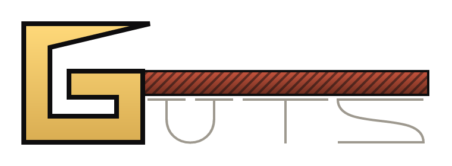

О проекте
GUTS — цифровая реализация коллекционной карточной игры «Берсерк». Здесь можно сражаться с компьютером или человеком за одним устройством, проходить кампанию и отдельные сценарии.
Кампания
Одиночное путешествие с отрядом героя: проходите испытания, обретайте новых союзников и получайте навыки, которые помогут одолеть зло, засевшее в замке владык слуа.
Сценарии
Битвы с необычными условиями и собственными механиками.
Неофициальный фанатский проект по мотивам ККИ «Берсерк». Права на «Берсерк» и его материалы принадлежат ООО «Мир Хобби»; проект не связан с правообладателем.